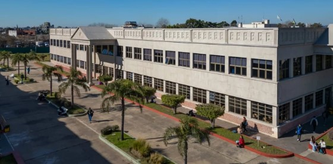

El programa está conformado por un total de 20 Materias, distribuidas en cinco cuatrimestres y divididas conceptualmente en: de Formación Básica, Introductorias a la Programación, Programación Web básicas y avanzadas, Base de Datos, Redes Informáticas, Talleres de Programación Web, Diseño de Aplicaciones Web, Calidad y Desarrollo Seguro de aplicaciones Web, Diseño Gráfico y Desarrollo de Interfaces de aplicaciones Web, Gestión de Proyectos Informáticos y Proyecto final de carrera. Toda la carrera se orienta a formar técnicos con sólida formación teórica y práctica y una rápida salida laboral.
